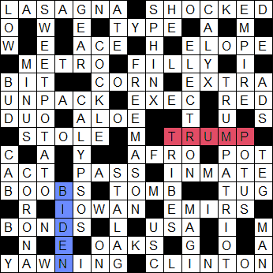

US Election 2020 Crossword: Solution
If you want to try the puzzle before reading this, you can find it here
In 1996, the New York Times ran an ingenious crossword
puzzle on the day of the US presidential election - a puzzle with two valid solutions. The clue to
39A was "Lead story in tomorrow's newspaper" with the answer being either CLINTON ELECTED or BOB DOLE ELECTED.
This style of puzzle, where two valid solutions exist but the correct one depends on something you won't known
until later, is known as a Schrödinger puzzle, after Erwin Schrödinger's famous thought
experiment
about a cat that is both alive and dead until you open the box. I was reminded of the NYT puzzle a few weeks ago
and realized that with BIDEN challenging TRUMP for the US presidency, this would be a nice opportunity to
try setting a Schrödinger puzzle of my own.

Solution and Explanations
Across
- 1Flying NASA gal is a bit of a dish! (7)
- LASAGNA Anagram ("flying") of NASA GAL
- 5Alarmed, he docks in the wrong place (7)
- SHOCKED Anagram ("in the wrong place") of HE DOCKS
- 9Sort the young people elect at primaries (4)
- TYPE Initials ("primaries") of the young people
elect, to give TYPE ("what type/sort of car is this?")
- 10Hotshot racer has wings clipped (3)
- ACE Remove letters ("wings clipped") from RACER
- 12Worker leaves buck to run away with sweetheart (5)
- ELOPE ANT ("worker") leaves ANTELOPE ("buck")
- 13Railway is in some trouble (5)
- METRO is in soME TROuble
- 14Sounds like the City of Brotherly Love, girl! (5)
- FILLY a girl - sounds like Philly, popular nickname for Philadelphia, known
as the City of Brotherly Love.
- 15Extract one or zero (3)
- BIT Computing 1 or 0 is a BIT - also synonym for "extract" ("read a bit
from the poem", "read an extract from the poem")
- 16Grain found in tonic or nightcap (4)
- CORN (grain) found in toniC OR Nightcap
- 17Bonus no longer part of share of trade (5)
- EXTRA No longer part of = EX, share of TRAde
- 20Remove content group after organisation (6)
- UNPACK PACK (group, e.g. of wolves) after UN (United Nations -
organisation); "remove content" = UNPACK
- 22E.g. Bezos' market, around ten? (4)
- EXEC Jeff Bezos, chief executive ("exec") of Amazon. Market around ten =
EEC (the "common market") around X (Roman numeral 10)
- 23In credit - or not? (3)
- RED In cREDit - but "in the red" = to be in debt.
- 24Two return proud after loss of Puerto Rico (3)
- DUO PROUD after loss of PR = OUD; turn it backwards ("return") = DUO
- 25Even tailbone is succulent (4)
- ALOE Take the even-numbered letters from
TAILBONE to give ALOE - a succulent plant.
- 26Back lots before base - ran to it! (5)
- STOLE "Back lots" = STOL before base = E (base of natural logarithms) =
"stole a base" is baseball terminology for running to a base between balls
- 27US election winner organised half of imprudent side (5)
- See below
- 30Natural style in organza frock (4)
- AFRO in organzA FROck
- 31Bill, 50, did not inhale prize (3)
- POT Bill 50 (= CLINTON), famously "tried pot but did not inhale"
- 33First court of law (3)
- ACT A (first) CT (court) of law (laws = acts, e.g. of Parliament)
- 35/48DLeave vessel empty in skillet (4,2)
- PASS ON Vessel = steam ship (SS), empty = O, skillet = PAN, to give PASS ON
- to leave something to one's successors or heirs
- 37Friend at home? They'll be away for a while (6)
- INMATE Friend (MATE) at home (IN) - inmate = prisoner ("away for a while")
- 38Heckle part of phone company beforehand? 27a's probably paid for a few
pairs. (5)
- See below
- 40Chamber inside atom bomb (4)
- TOMB Inside aTOM Bomb
- 41Pull, turn, eviscerate (3)
- TUG Eviscerate = GUT, turn = put it backwards, to give TUG = pull.
- 42You'll find this in Wright County (5)
- See below
- 43Measure tax collectors with rulers (5)
- EMIRS Measure = EM (from printing/typography), tax collectors = IRS, to
give EMIRS - rulers (e.g. of United Arab Emirates)
- 45Invest in 39's government, you might get this? (5)
- See below
- 46Nation at heart of crusade (3)
- USA At heart of crUSAde.
- 48Trees love Caribbean music played backwards (4)
- OAKS Love = O (Zero in tennis scoring); Caribbean music (SKA) played
backwards = AKS
- 49Swinging left and right around point? 27a's supporters claim 39 does this
a lot. (7)
- See below
- 50He was 42 - and she was nearly 45! (7)
- CLINTON Bill Clinton was the 42nd President; Hillary Clinton famously won
the popular vote in 2016 but lost the Electoral College to Donald Trump.
Down
- 1Down garments helpful when climbing (3,4)
- LOW GEAR Down = LOW, garments = GEAR, "low gear" helpful when driving up
hills (climbing)
- 2Confused OAP tweets to vegetable (5,6)
- SWEET POTATO Anagram ("confused") of OAP TWEETS TO
- 4Consumed by rugby player, we hear (3)
- ATE Consumed = ATE, sounds like ("we hear") EIGHT = number eight, a
position in rugby.
- 5Mythical creature with head of sparrow, body of rhino and tail of lynx (6)
- SPHINX Head of SP, body of rhINo, tail of lyNX
- 6/47General losing Suriname, macho type (2,3)
- HE MAN General = SHERMAN, losing Suriname (SR), to leave HE MAN ("macho
type")
- 7Shorten scale and reverse axes to protect growth (5)
- CALYX Shorten SCALE = CAL (remove first & last letters), reverse XY (axes
on a graph) to give YX; CALYX = part of a flower that protects growth of petals
- 8Anger after record about motorway cartel (6)
- EMPIRE IRE ("anger") after EP ("record") about motorway ("M")
- 11Hearty shellfish (6)
- COCKLE "The cockles of one's heart"
- 12Losing one could lead to a charged situation? (8)
- See below
- 13Without station, without model, without queen (5)
- MINUS TERMINUS ("station") without T ("model" - Model T Ford), without ER
("queen"), to leave MINUS - meaning without.
- 14Release Perry, a society man (9)
- FREEMASON Release = FREE, Perry = MASON (TV detective)
- 15Drink, friend, and blossom (3)
- BUD BUD = Drink (Budweiser), friend (buddy), and blossom (e.g. bud of a
flowering plant)
- 1827a addressing supporters put traitor with a bit of Boris? Crazy! * (11)
- See below
- 19Notices Democrat in centre of fiasco (3)
- ADS Democrat D in centre of fiASco = ADS, as in advertisements =
notices.
- 21Tunes part of lyre quietly during state emergency (8)
- CALYPSOS Part of lyre = LY, quietly = P (musical term piano)
during state (CA) emergency (SOS) = CALPYSOS
- 2727a doesn't want them influencing the vote! (6)
- See below
- 28Who wants four more years of Trump? * (5)
- See below
- 29Hire one to travel around Belgium (3)
- CAB around = CA (circa), Belgium = B; "hire one to travel"
- 32Sheep get-up (3)
- TEG GET backwards ("up") = TEG, a male sheep
- 34Why part of plan or occasion's turned upside-down (6)
- CORONA Part of plAN OR OCcasion, turned upside down = backwards
- 36Debauched gathering around state penitentiary (6)
- STALAG Debauched gathering = STAG, state = AL (Alabama), STALAG = a
prisoner of war camp ("penitentiary")
- 3927a's opponent? Half-baked bum president losing Florida, Georgia, Alabama
etc. (5)
- See below
- 44Wise men imagine losing Indiana and seat (4)
- MAGI IMAGINE losing Indiana (IN) and E = east = one of the seats in the
game of bridge.
- 46School in serious condition (3)
- USC USC = University of Southern Californa ("school") - in serioUS
Condition.
Special Solutions
As you probably figured out, it all hinges on 27a - "US election winner" - with the rest of the
double-solution clues based on whatever was entered at 27a. Where a clue includes wordplay, it
should work equally well for both solutions.
- 27a
Organise half of imprudent side to reveal US election winner. (5)
- BIDEN IMPRUDENT + B ("side") - take half the letters and anagram
("organise") to give BIDEN.
- 39d 27a's opponent? Half-baked bum president
losing Florida, Georgia, Alabama etc (5).
- TRUMP BUM PRESIDENT losing SE (south-east - Florida, Georgia,
Alabama, etc) gives BUMPRIDENT; anagramming one half of those letters ("half-baked") yields TRUMP.
(Yes, I know Trump didn't lose Florida or Alabama. He's gonna lose Georgia, though - just
wait...)
- 12d
Losing one could lead to a charged situation? (8)
- ELECTION Media speculation about violence and civil disorder
following the US election has been widespread, although fortunately so far appears groundless.
- ELECTRON In particle physics, electrons are negatively charged, so an
atom acquires a positive charge when it loses an electron
- 27d
27a doesn't want them influencing the vote! (6)
- BRIBES Honesty and integrity were a key part of Joe Biden's
campaign to win the White House.
- TRIBES The Trump campaign's efforts to disenfranchise people of
colour in key districts are well documented.
- 18d 27a addressing supporters put traitor with a
bit of Boris? Crazy! * (11)
- TRUE PATRIOT or TRUMP AT RIOT
"27a addressing supporters" is the definition. PUT TRAITOR wth either P or M ("a bit of Boris" Johnson, UK
Prime
Minister), anagram ("crazy") to yield solution.
- 28d 28 Who wants four more years of Trump? * (5)
- NOT US or POTUS
This one should be self-explanatory (unless you're a Trump supporter who predicted a BIDEN victory in 27a,
in which case the clue doesn't *quite* work...)
- 38a Heckle part of phone company beforehand?
27a's probably paid for a few pairs.
- BOOTS or BOOBS
BOO ("Heckle") B or T ("part of phone company" BT = British Telecom) beforehand (S = south = one of the
hands in bridge.)
As for "27a's probably paid for a few pairs"... I'm sure Joe Biden has bought a few pairs
of boots in his time... and if 27a is TRUMP, you can figure it out.
- 42a You'll find this in Wright County - part of how
Ankeny follows letter from IRS (5)
- ROWAN or IOWAN
Part of hOW ANkeny follows "letter from IRS" - either I or R.
Wright County, Iowa, is home to the town of Rowan, and several thousand Iowans.
- 45a What you might get if you invest in 39d's
government? (5)
- BONDS or BONUS
Government BONDS, a common low-risk investment - or BONUS, what, presumably, Trump has awarded
his supporters from time to time.
- 49a Swinging left and right around point? 27a's
supporters claim 39 does this a lot. (7)
-
YAWPING or YAWNING
Swinging left and right = YAWING, around point - either P, or N (compass point north). If 27a is TRUMP,
it's YAWNING, a reference to the Trump campaign calling their opponent "Sleepy" Joe Biden. If 27a is BIDEN,
it's YAWPING - "to talk loudly, raucously, or coarsely; loud or coarse talk or utterance."
That's your lot. Hope you enjoyed it.